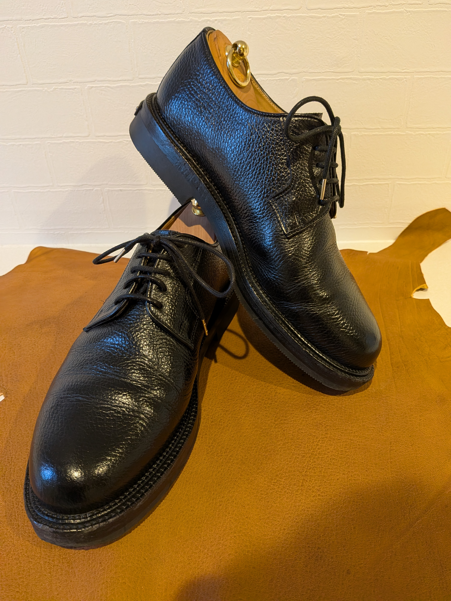
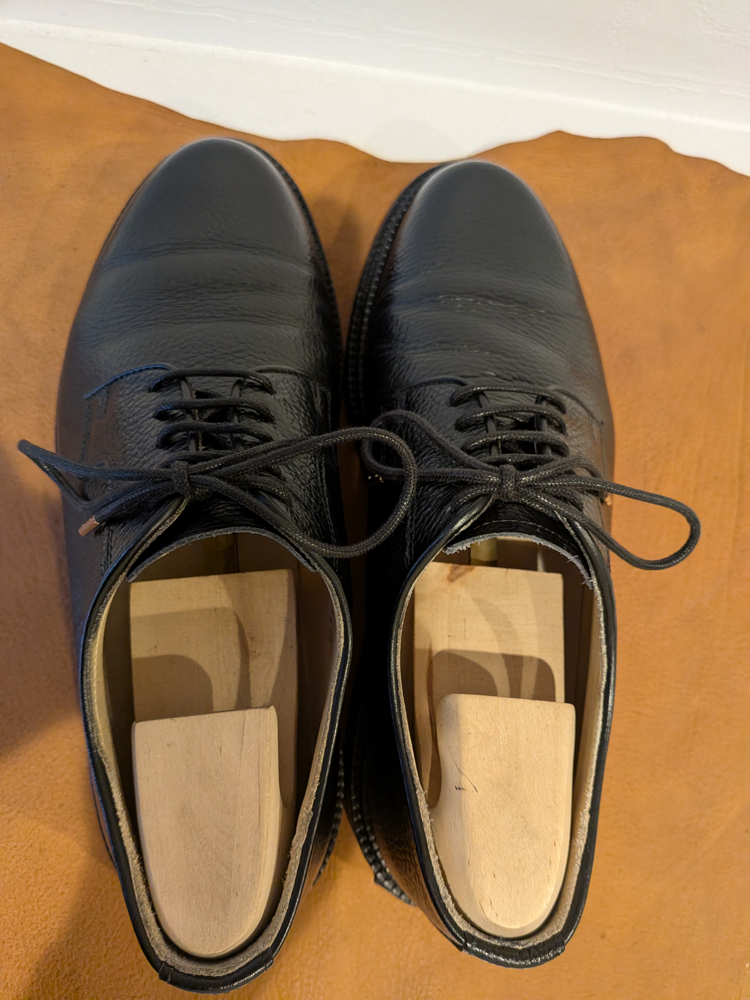
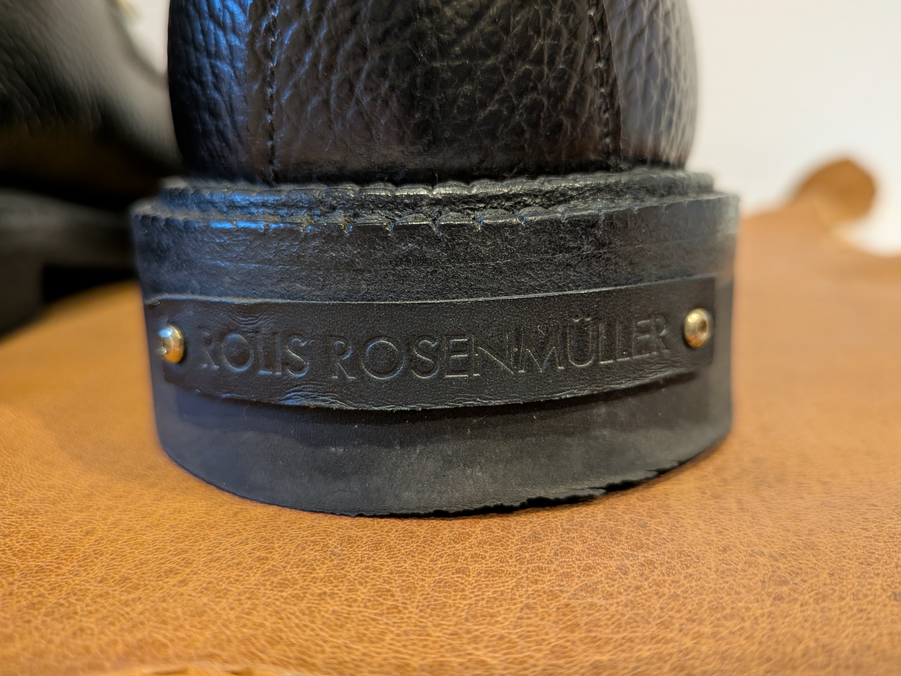
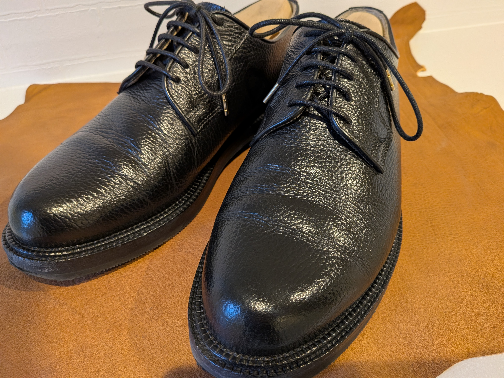

ロリス・ローゼンミュラーの外羽根プレーントゥ
2026年4月11日 初稿
ロリス・ローゼンミュラーについて
ロリス・ローゼンミュラー（ROLIS ROSENMÜLLER）はドイツの注文靴メーカージェラルド・ギレスベルガー（Gerhard Gillesberger）が製造した革靴のブランドです。このブランドに関する詳しい情報はホームページおよびhttps://giessbach-schuhgilde.com/に譲ります。ロリス・ローゼンミュラーのホームページからは3種類の既成靴を注文できます。ただし試着や木型補正はできません。
印象

ラバーソールの大ぶりな外羽根プレーントゥです。僕の意見では糸が細い光沢のある生地を使ったスーツスタイルには不適当な気がします。雨の日に雨靴だと言い張ればギリギリ許容できる程度でしょうか。デニムやチノパンツ、コーデュロイ、ツイードなどのフォーマルから外れた生地を選び、テーパードが強調されたものよりは標準〜太めの裾幅でワンクッションほど落とした長さが似合うと思います。
モデルは黒のスムースレザー（Julius Obsidian）、黒のシボ革（Gilles Gelände）、茶のシボ革（Novalis Gelände）を使った同じ形の靴が3種類展開されています。中でも黒のシボ革のモデルであるGilles Geländeには水牛の革が使われていると明言されています。
サイズは英国靴のUKサイズからハーフサイズ落としたサイズが適正サイズのように思えます。僕は普段UK9でジャストなので8.5のサイズがちょうどよく履けています。適正UKサイズと同じサイズのものも持っていますが、羽根がすべて閉じ切ってしまうほどにゆとりがあるので革のインソールを自作して2枚ほど入れて履いています。

僕の踵が小さいのでサイズ8.5でも履き始めは踵がほんのわずかに浮きます。しかしこの感覚は履いてから1時間も経つと消え、浮きもなくぴったりはまったような履き心地になります。履いて所有者の足の形に合わせて沈み込ませることで履き心地が完成する靴なので、履きおろして日が浅く沈み込みも甘い時点では足への違和感をおぼえるかもしれません。僕の場合は拇指球にほかの靴よりも強い圧力がかかっているような感覚をおぼえましたが、着用するうちにそれは薄れていきました。
トリプルソールの構造を採用している都合で靴の重量は重めです。サイズ8.5のGilles Geländeで片足770gほどあります。一足履くと体重が1.5kg弱増えるということですね。靴の重たさを忌避する方には受け付けられないでしょうが、これを履いて歩いても特に重さに泣くことはありません。むしろ歩くときにこの重みが好ましく感じられます。

長所
カジュアルに幅広いシーンで気兼ねなく使える点は明確な長所です。ラバーソールなので雨の日でも気にしなくていいですし、雨に降られた程度では染み込まずなんともないシボ革が使われています。（ブラッシングなどの基本は踏襲するとして）スニーカーのように使っていい革靴に分類されるのではないでしょうか。
沈み込みが終わり足の形にやさしく沿うようになったフィッティングは、自身の重量もあり履いていてとても所有欲が満たされます。トリプルソールゆえのこの幅とソール最下層のラバーソールの厚みが「履いている感」を助長させてくれます。短靴ですがまるでブーツのような履き心地です。
最後にこれは靴そのものではなくブランドを褒めることになりますが、ホームページで「この靴がなぜ素晴らしいのか」「どのような素材を使っているのか」「われわれの目論見はなにか」を丁寧に説明することでブランディングをおこなう姿勢は他の多くのメーカーが見習うべきです。正直なところわれわれ消費者にはその説明が正しいことをいわゆるリバースエンジニアリングで解明するのは難しいので検証のしようがありませんが。それでも「こういう靴作りをしている。だからあなたは満足できるのだ」というメッセージには購買意欲がそそられるものがありますし、選ぶことに自信を持てます。

欠点
購入前に試着ができません。コスト的に、あるいは靴の造り的に仕方のないことではありますが、ここはほかの既成靴メーカーと比べるとどうしても劣る点です。前述のとおりUKサイズからハーフサイズ落としたものを選ぶか、仮にハーフサイズ程度大きかったとしてもインソールで調整できると割り切りましょう。サイズがキツいものは履いても苦痛でしかないので、ワンサイズ落とすのはやり過ぎです。僕の場合は最終的に8、8.5、9の3サイズぶんを買い実際に履くことでロリス・ローゼンミュラーにおける適正サイズを見出しましたが、これはこれで確実な方法ではあるもののやり過ぎです。
最後に、これは靴そのものというよりはブランドの情報発信に関するものではありますが、ホームページのお知らせ（INFORMATION）がたびたび更新されており、時系列順でなかったり削除されていたりページが404だったりするのもあまり好ましくないです。メーカーの情勢などによって情報がたびたび変わること自体はなんら問題ありませんが、過去に掲載した情報にはひととおりアクセスでき、それがいつ掲載されたのかが分かるようになっているのがホームページとしては望ましいでしょう。